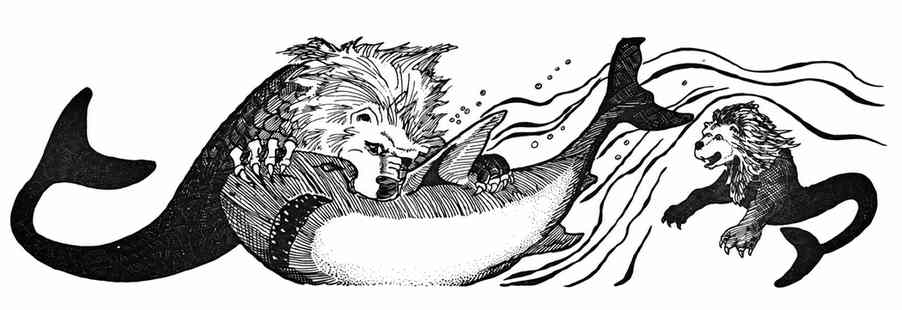

巨型海马 · Sea Horse, Giant

| 项目 | 数据 |
|---|---|
| 出现频率 | 常见 |
| 出现数量 | 1–20 |
| 护甲等级 | 7 |
| 移动力 | 2 寸 |
| 生命骰 | 2–4 |
| 在巢穴概率 | 0% |
| 财宝类型 | 无 |
| 攻击次数 | 1 次 |
| 攻击伤害 | 1–4／2–5／2–8 |
| 特殊攻击 | 无 |
| 特殊防御 | 无 |
| 魔法抗性 | 标准 |
| 智力 | 半智能 |
| 阵营 | 中立 |
| 体型 | L |
| 灵能能力 | 无 |
巨型海马是除最寒冷水域外各处都能发现的海生草食动物。它们天性胆小，会尽量躲避接触，但可以训练为坐骑。战斗时用头部撞击；最常见的个体为 2 骰，30% 为 3 骰，10% 为 4 骰。水精灵和洛卡萨族偶尔会捕捉并训练海马。